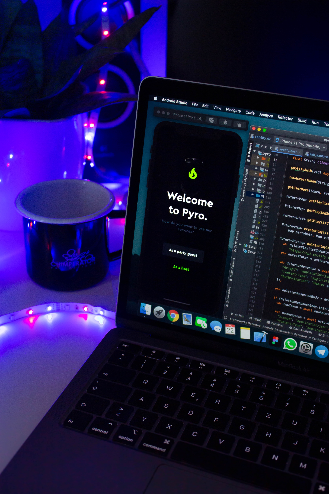

Desarrollo de Aplicaciones Analíticas
Desarrollamos aplicaciones analíticas desktop y web. Modelos causales, clasificación y proyecciones.
Creamos aplicaciones analíticas según las necesidades y requerimientos de los objetivos de tu proyecto.
Ponte en contacto
Utilizamos herramientas predictivas con lenguaje R o Python. Podemos programar prototipos de solución en función al tipo de problema que se desea resolver utilizando técnicas de simulación, optimización, predicción, probabilidades y estadística inferencial. Contamos con experiencia en aplicaciones científicas.

Desarrollamos aplicaciones analíticas desktop y web. Modelos causales, clasificación y proyecciones.
Podemos diseñar y desarrollar proyectos de creación de soluciones educativas de impacto social.
Creatividad utilizando tecnología orientada a solucionar problemas de manera creativa.
Ambientes de acceso controlado para acceder a servicios analíticos.
Optimización de rutas y análisis de modelos de distribución inteligente.
Diseño de aplicaciones predictivas sobre mapas.